Con la burrata
Burrata a ciuffi e salumi, su un fondo rosso.
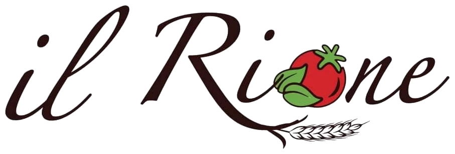
PrenotaImpasto leggero, steso in forma ovale e condito con ingredienti freschi. A pranzo e a cena, con una birra artigianale e un dolce della casa. E la domenica mattina, il brunch.
La pinsa è la cugina romana della pizza: si stende in forma ovale, viene croccante fuori e morbida dentro. Non è paragonabile alla napoletana, e non vuole esserlo.
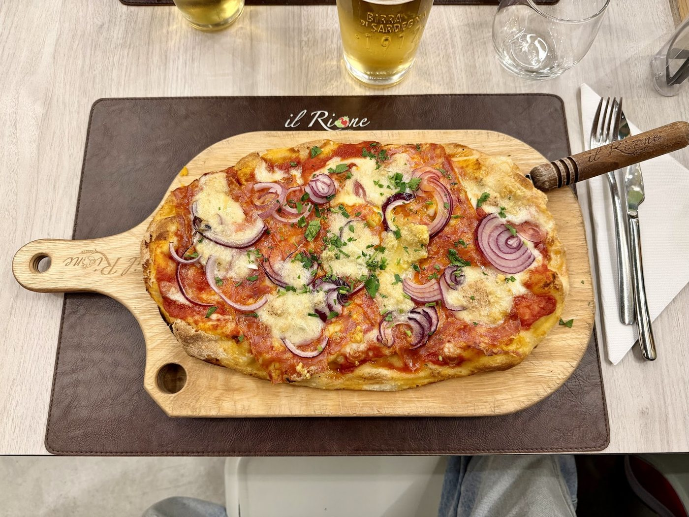
Burrata a ciuffi e salumi, su un fondo rosso.
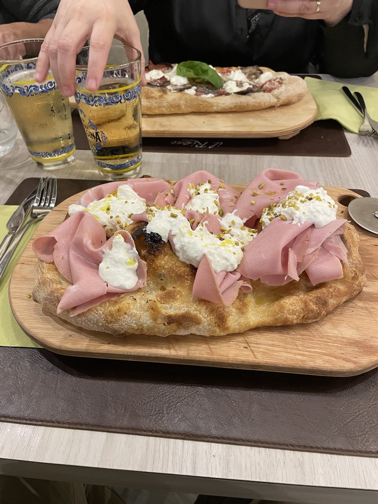
Una delle bianche: rosa, morbida, golosa.
Rossa, con verdure e cipolla.
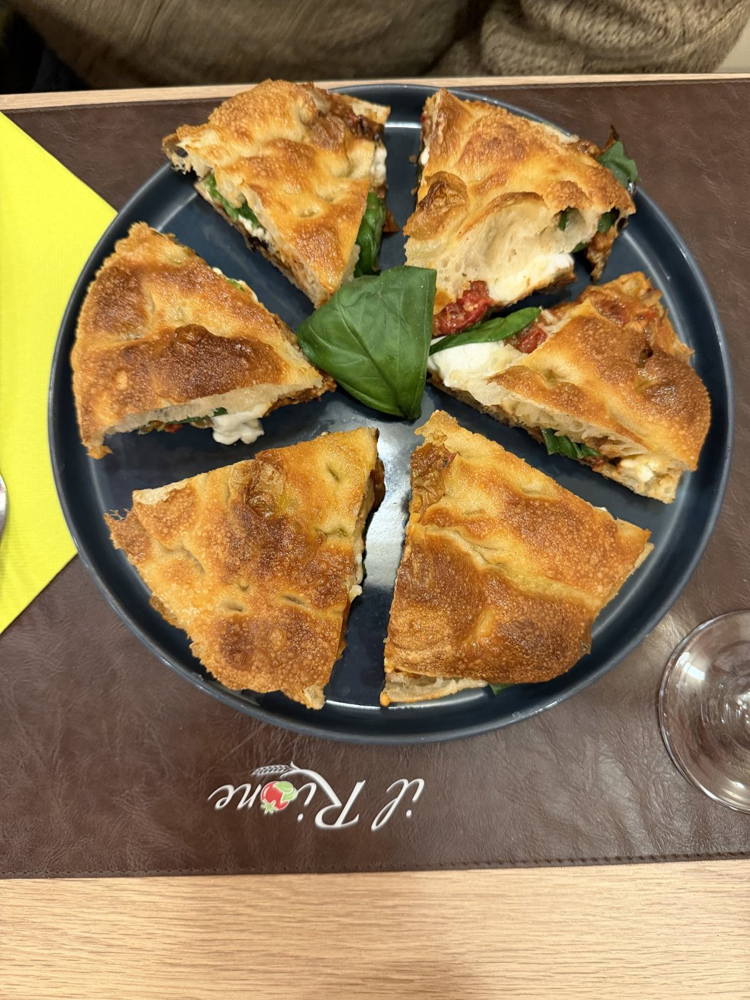
Per chi vuole assaggiarne un po' di tutte.
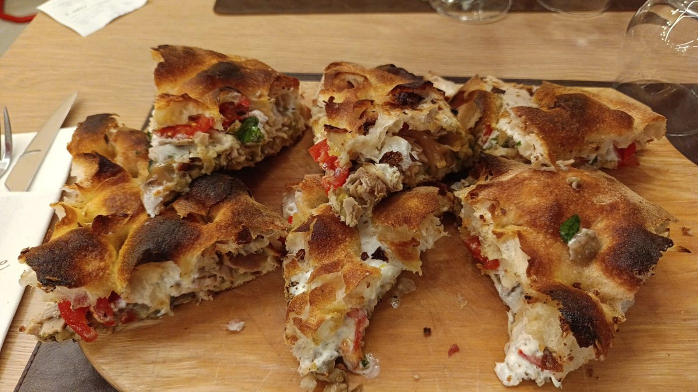
Chiusa e farcita, da dividere.
Tra le più citate nelle recensioni: la «Rione d'amicizia» e la pinsa con miele, fichi, lardo e castagne.
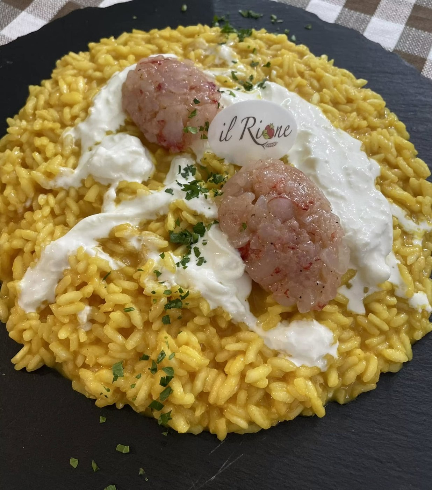
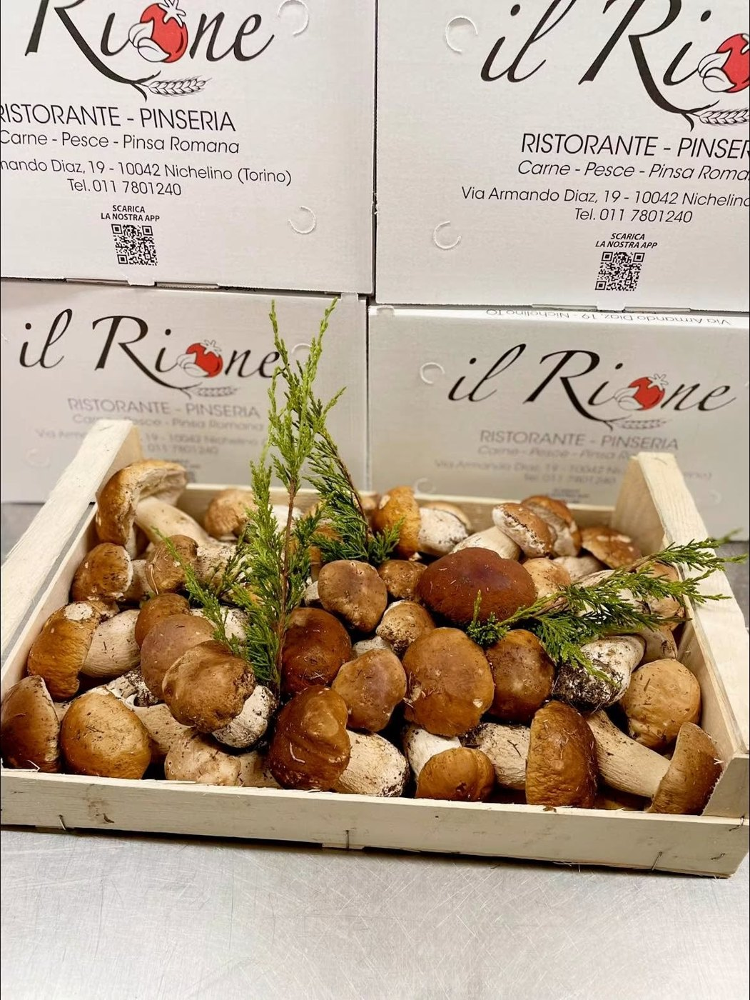
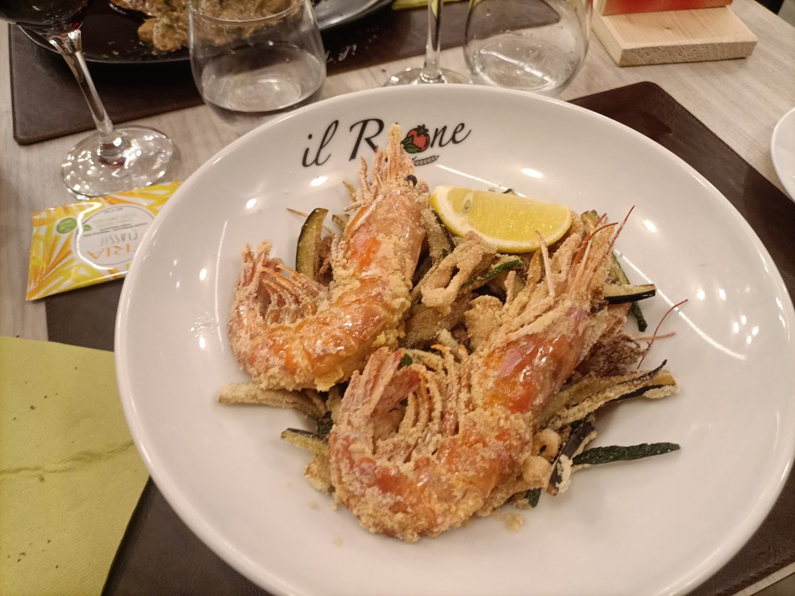
«Si inizia col brunch, si prosegue con l'aperitivo e si fa pranzo»: la domenica il Rione apre la mattina, dalle 9 alle 13.
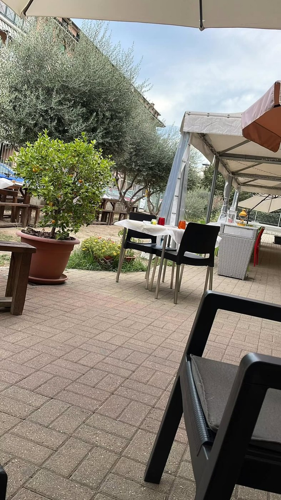
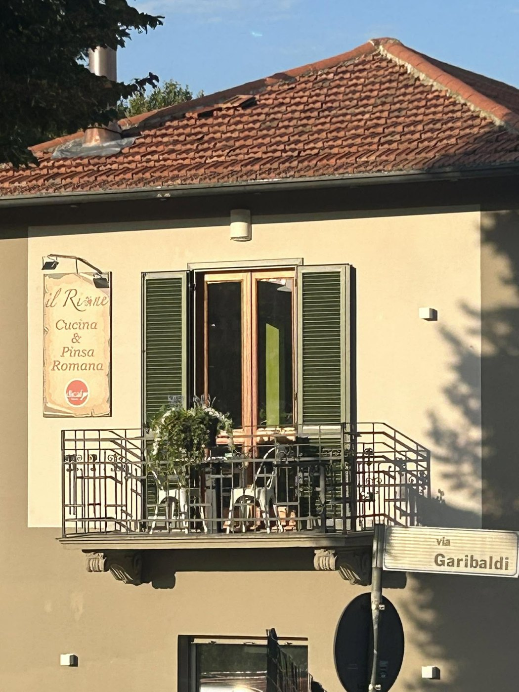
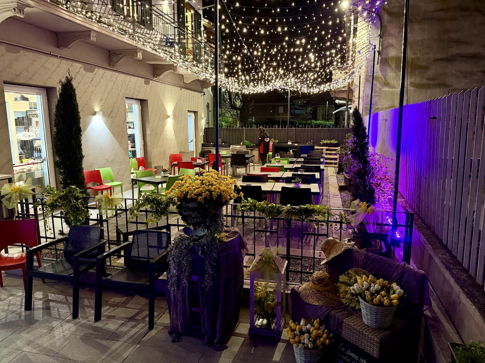
Una palazzina in Via Garibaldi, con la sala su due piani e i muri arancio. Fuori, il giardino per il pranzo e il dehors con le lucine per le sere d'estate.
«Location che stupisce per gli ampi spazi e l'ambiente semplice e curato», scrive un cliente.
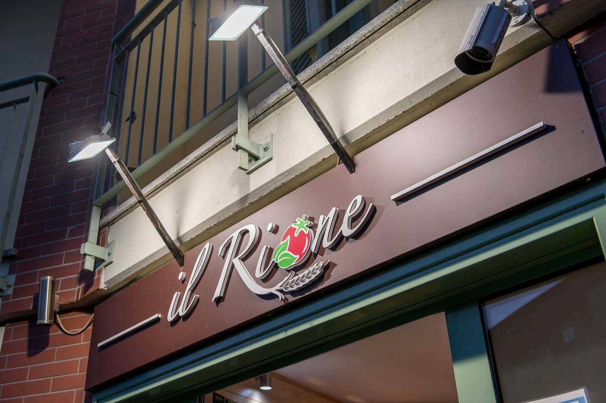